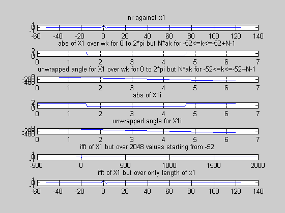

clear
clc
nr=[-52:124];
syms n
W=pi/2;
x1_n=(W/pi)*sinc(W/pi*n);
x1=subs(x1_n,n,nr);
nan=find(isnan(x1));
x1(nan)=1;
N=2048;
wk=[0:N-1]*2*pi/N;
X1=fft(x1,N);
x1i=ifft(X1);
X1i=fft(x1i,N);
figure(1)
clf
subplot(711)
plot(nr,x1);
title('nr against x1');
subplot(712)
plot(wk,abs(X1));
title('abs of X1 over wk for 0 to 2*pi but N*ak for -52<=k<=-52+N-1');
subplot(713)
plot(wk,unwrap(angle(X1)));
title('unwrapped angle for X1 over wk for 0 to 2*pi but N*ak for -52<=k<=-52+N-1');
subplot(714)
plot(wk,abs(X1i));
title('abs of X1i');
subplot(715)
plot(wk,unwrap(angle(X1i)));
title('unwrapped angle for X1i');
subplot(716)
plot([-52:-52+N-1],x1i);
title('ifft of X1 but over 2048 values starting from -52');
subplot(717)
plot(nr,x1i(1:length(x1)));
title('ifft of X1 but over only length of x1');
return
